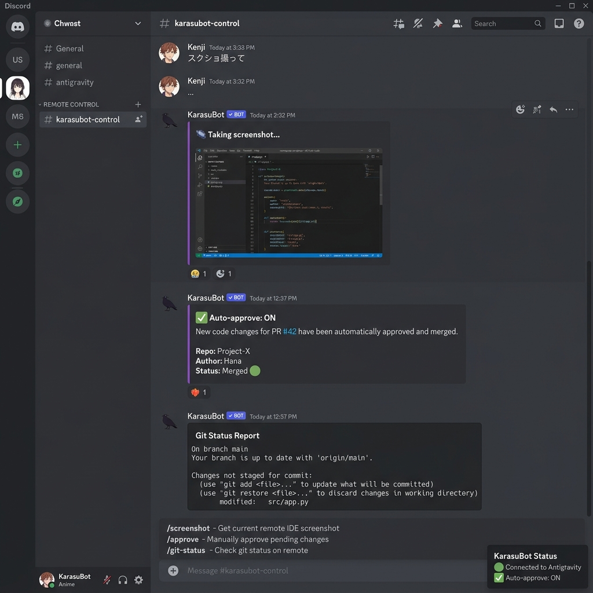

業務推進DX担当 @ ReSowホールディングス
岡田 賢揮 Kenki Okada
就労継続支援B型事業所「ワンダーフレンズ」を運営する会社で、一人情シス兼DX担当をやっています。 「これ、自動化できないかな」から始まって、気づいたらBot・AI・クラウドまで手を広げていました。
_
LIVE STATUS
ReSow Portal
Ghost Memory
KarasuBot

Ghost Memory Engine
運用中AIに記憶を持たせたかった。脳科学の論文を読み漁って、情動・忘却曲線・連想ネットワークをコードに落とし込んだ。

ReSow Portal
運用中4法人の情報がバラバラだった。Google Sheetsをデータソースにしたポータルサイトを作り、AIチャットボット「くまくま🐻」を搭載。
SKILLS
言語
PythonJS/TSGAS
Frontend
ReactViteMantine
Backend
FlaskNode.jsREST
Cloud
GCPCloud RunDocker
AI / Bot
Vertex AIMCPDiscord.js
業務自動化
GASWebhookCRON

KarasuBot
運用中Antigravityをスマホから遠隔操作するDiscord Bot。26のスラッシュコマンドで画面キャプチャ・モデル切替・プロンプトキュー管理。
CAREER
2025–
ReSowホールディングス
業務推進DX担当
2022
ワンダーフレンズ
支援員 → 管理者 → DX兼務
–2021
異業種からの転身
プログラミングは独学で習得
CONTACT